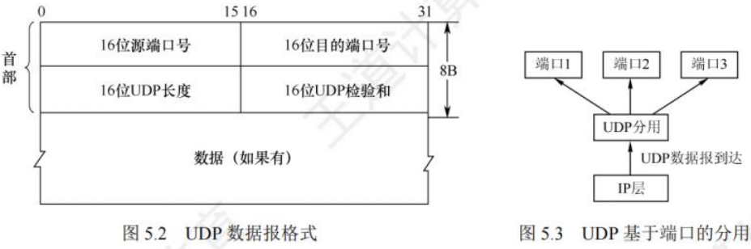
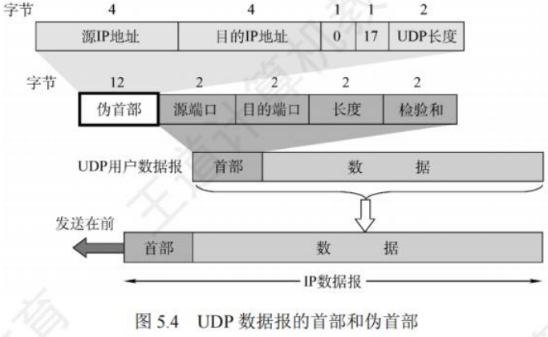
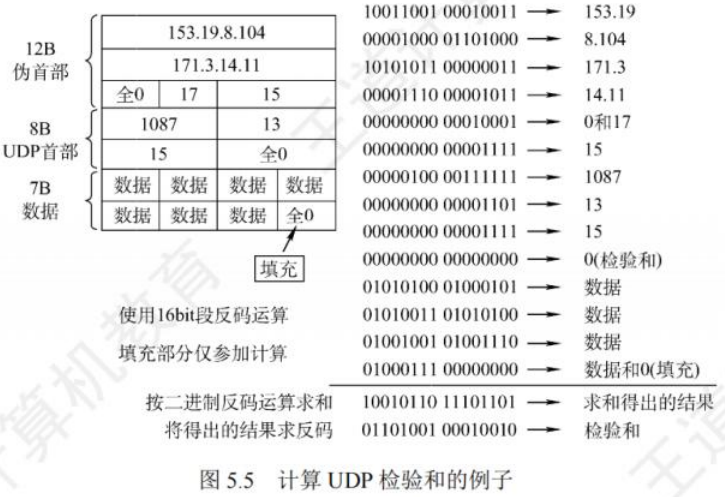

5-2UDP
UDP
[toc]
UDP数据报
UDP概述
UDP仅在IP层的数据报服务之上增加了复用、分用以及差错检测功能。
UDP优点
- 无需建立连接：不会引入建立连接的时延。
- 无连接状态：TCP需在端系统维护连接状态，包括接收和发送缓存、拥塞控制参数及序号与确认号参数等。而UDP既不维护连接状态，也不跟踪这些参数，使得专用服务器使用UDP时能支持更多活动客户机。
- 首部开销小：TCP首部开销20B，UDP仅有8B。
- 无拥塞控制：网络拥塞不影响源主机发送速率。一些实时应用要求源主机稳定速率发送数据，能容忍部分数据丢失，但不容许较大时延。
- 支持多种交互通信：支持一对一、一对多、多对一和多对多的交互通信。
UDP常用于一次性传输较少数据的网络应用，如DNS、SNMP等，因其若采用TCP，连接创建、维护和拆除开销较大。UDP也常用于多媒体应用，如IP电话、实时视频会议、流媒体等，这些应用对可靠数据传输要求不高，但不能容忍TCP拥塞控制导致的较大延迟。
UDP不保证可靠交付，但应用对数据可靠性要求可由用户在应用层完成。UDP是面向报文的，发送方UDP对应用层交下来的报文添加首部后交付给IP层，一次发送一个报文，不合并、不拆分，保留报文边界；接收方UDP对IP层交上来的UDP数据报去除首部后原封不动交付给上层应用进程，一次交付一个完整报文。报文不可分割，是UDP数据报处理的最小单位，应用程序需选择合适报文大小，否则可能降低IP层效率。
UDP的首部格式
UDP数据报由首部字段和用户数据字段组成。UDP首部8B，由4个2B字段组成，各字段意义如下：
- 源端口：源端口号，需要对方回信时选用，不需要时可用全0。
- 目的端口：目的端口号，用于终点交付报文。
- 长度：UDP数据报长度（含首部和数据)，最小值为8（仅有首部)。
- 检验和：检测UDP数据报传输是否有错，有错丢弃。该字段可选，源主机不想计算检验和时，令该字段为全0。
传输层从IP层收到UDP数据报，根据首部目的端口，将UDP数据报通过相应端口上交应用进程。若接收方UDP发现目的端口号不正确，丢弃报文，并由ICMP发送“端口不可达”差错报文给发送方。

UDP检验
计算检验和时，在UDP数据报前增加12B伪首部，伪首部并非UDP真正首部，仅用于计算检验和，不向下传送也不向上递交。

UDP计算检验和方法与IP数据报首部检验和方法相似，但IP数据报检验和只检验首部，UDP检验和需将首部和数据一起检验。具体计算方法为：
- 发送方：先将全0放入检验和字段并添加伪首部，把UDP数据报视为16位字串接起来，若数据部分不是偶数个字节，末尾填入一个全0字节（不发送)，按二进制反码计算这些16位字的和，将和的二进制反码写入检验和字段后发送。
- 接收方：收到UDP数据报加上伪首部（数据部分非偶数个字节时补上全0字节)，按二进制反码求这些16位字的和，无差错时结果应为全1，否则表明有差错，接收方应丢弃该UDP数据报。

总结：
- 检验时，UDP数据报部分长度非偶数字节需填全0字节，此字节和伪首部一样不发送。
- 若UDP检验和检测出数据报错误，可丢弃或交付上层并附上错误报告。
- 通过伪首部可检查源端口号、目的端口号、UDP用户数据报数据部分以及IP数据报的源IP地址和目的地址。此差错检验方法简单、处理速度快，但校错能力不强。
5-2UDP
https://daynz.github.io/notes/计算机基础/计算机网络/5-2UDP.html